4. User Interfaces
Links to Subchapters
4.1 Selection
4.2 Editing a parameter
4.3 Editing the Modulation of a Parameter
4.4 Macro Controls
4.5 Hardware Sources
4.6 Presets
4.7 Item Info
4.8 Overviews
4.9 The Undo Mechanism
4.10 The Rename Mechanism
4.11 Sound Manipulation
4.12 Setup
4.13 Backups
4.14 Base Unit functionality
4.15 Graphical UI exclusive functionality
As described, the C15 provides two different user interfaces. The Hardware User Interface consists of both Base Unit and Panel Unit, providing haptic („hands on“) control.
The Graphical User Interface is available on external devices via Wi-Fi connection and provides a detailed parameter and preset representation. Multiple devices can be connected in parallel, each focussing on different aspects.
The following chapters explain how to focus on items and their aspects for further editing.
4.1 Selection
The C15 architecture was designed to o er quick access to all items and aspects, providing one central area representing the current focus. This main principle (of focussing on one item at a time for further editing) affects each interaction on any available user interface. As mentioned, the current focus will be shared with all involved devices.
Selection [Panel Unit]
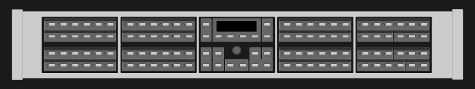Parameter Panels provide Parameter Selection Buttons. A lid LED indicates the current focus.
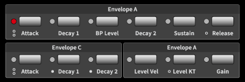Multiple parameters can be provided by one Parameter Selection Button (indicated by circles below LED).
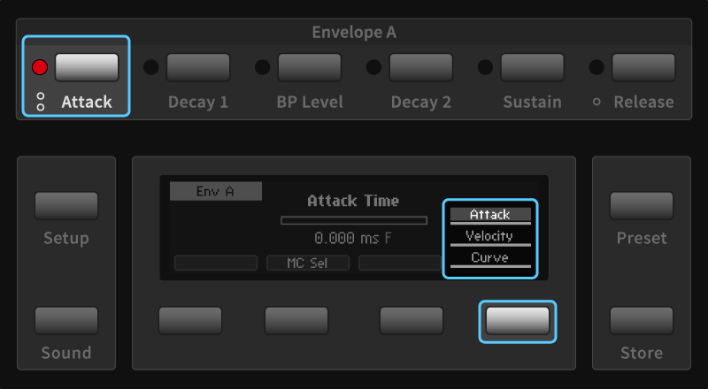The Parameter Selection Button or Soft Button 4 will cycle through the stack.
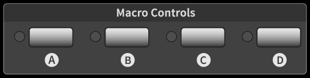Macro Controls appear as a distinct group and can be selected. Pressing a Selection Button twice will redirect to the Hardware Sources.
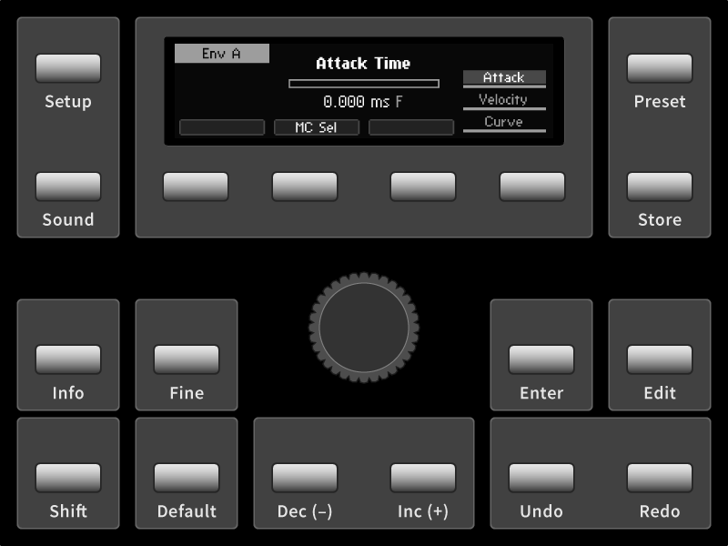The Panel Unit Display will provide a corresponding screen for the selected item. Buttons of the Edit Panel provide access to all item aspects.
Selection [Graphical UI]
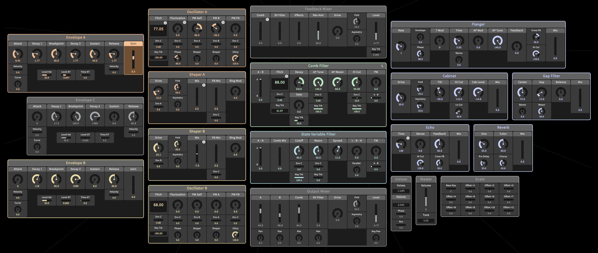All parameters are shown in the main area and can be selected by clicking.
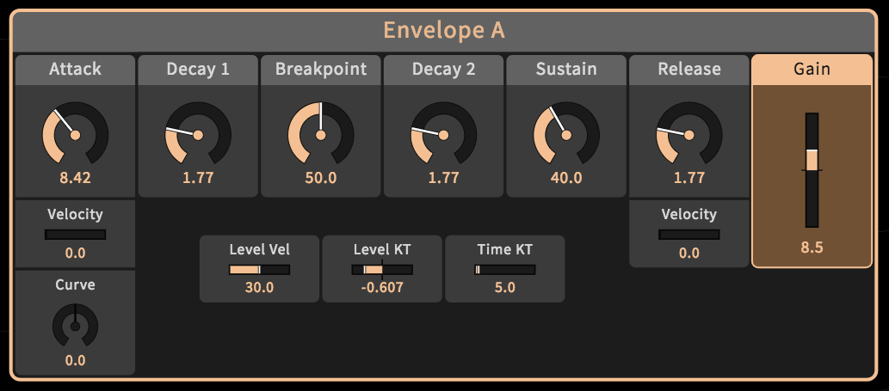A highlighted element background indicates the current selection. The mouse wheel or pinch gestures on the main area background will zoom into the provided map. On different zoom levels, different details emerge. High priority parameters are always visible.
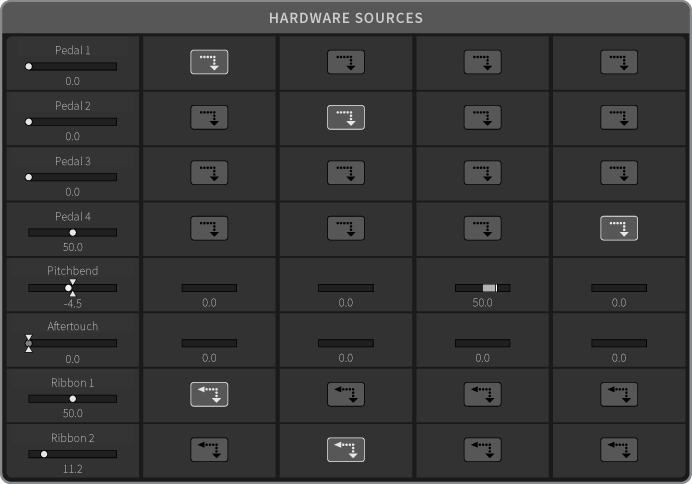Macro Controls and Hardware Sources appear as separate groups in the main area, providing all related aspects.
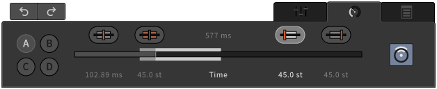The expandable Tab area shows and provides all item-related aspects. Parameter edits can be realized in the Parameter Tab.
The chapters 7.2 to 7.6 refer to a selected parameter- or preset-related item. Further (menu-related) items and access to them will be explained in the chapters 7.7 to 7.12)7.2 Editing a Parameter
4.2 Editing a parameter
Adjust Control Position, coarse [Base Unit]

The Mode Button can put Ribbon 1 in Edit Mode. Display and touch strip of Ribbon 1 will represent the currently selected parameter, while Ribbon 2 still operates in Play Mode.
Adjust Control Position, coarse [Panel Unit]
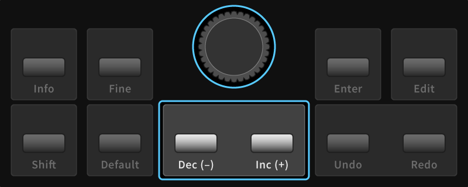Use the Encoder to adjust the currently selected parameter. The Dec and Inc Buttons can be used for stepwise adjustments.
Adjust Control Position, coarse [Graphical UI]
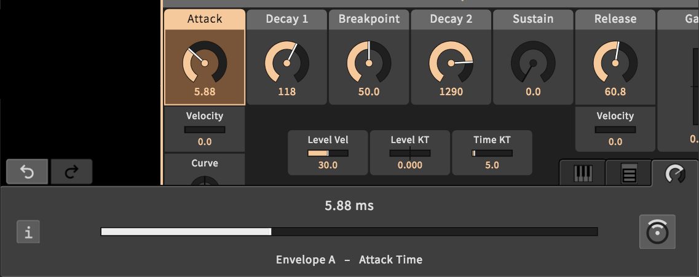If the external device features a mouse or touch display, use drag gestures to adjust the currently selected parameter. (Use the Parameter Tab slider or main area element, if GUI settings allow for it.)
If the external device features a keyboard, K and M keys can be used for stepwise adjustments (K for incremental, M for decremental adjustments)
Adjust Control Position, fine [Panel Unit]
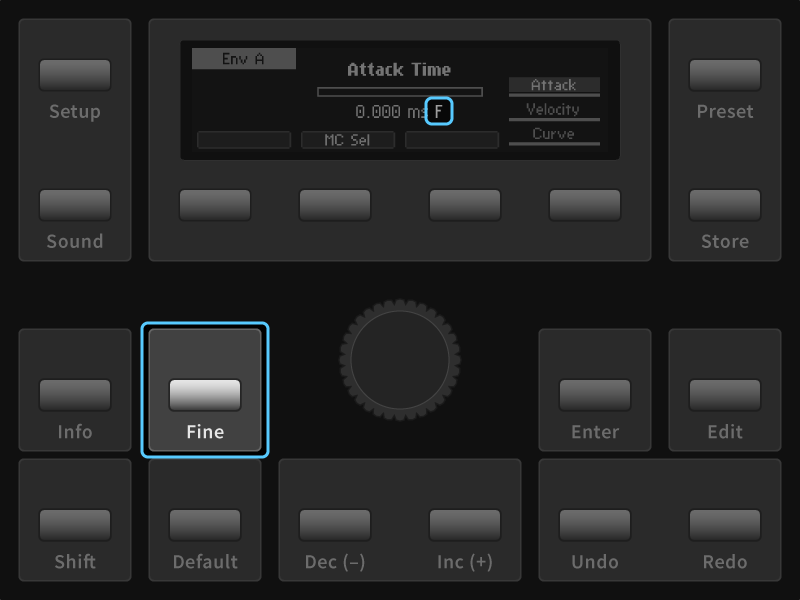The Fine Button toggles high resolution mode for adjustments. An F indicator will appear in the Parameter Screen.
Adjust Control Position, fine [Graphical UI]

While holding down the Shift key, parameter adjustments will be made in high resolution mode.

On the slider in the Parameter Tab, a pinch gesture (holding one finger while dragging another) will allow for adjustments in high resolution.
Reset Control Position [Panel Unit]
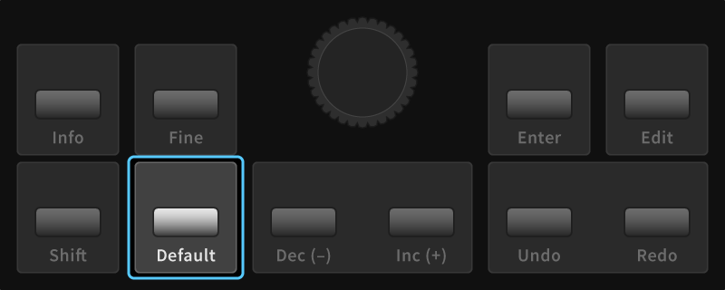Press the Default Button to recall the parameter’s default value.
Reset Control Position [Graphical UI]
Double click on element in the main area (if GUI settings allow for it) or the slider in the Parameter Tab in order to recall the currently selected parameter’s default value.
Control Position edges [Panel Unit]
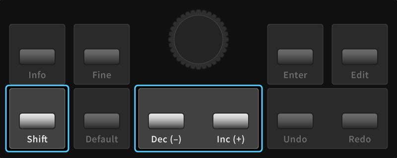Hold the Shift Button and press Dec Button for minimal, Inc Button for maximal value.
4.3 Editing the Modulation of a Parameter
Focus on modulation aspects [Panel Unit]

By default, the parameter’s control position is in focus. Soft Buttons 1 to 4 provide focus navigation, pressing a button twice will return to the default focus. (If a Macro Control is assigned, Soft Buttons 1, 2 and 4 are available.) Modulation aspects are indicated in the Panel Unit Display.
Focus on modulation aspects [Graphical UI]
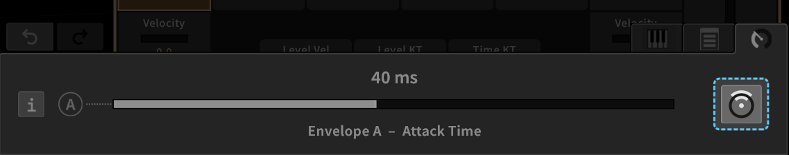In the parameter tab, the modulation icon can be clicked in order to toggle the focus on modulation aspects (if a Macro Control is assigned, all aspects are available). The horizontal slider represents the aspect in focus (or the control position by default). Elements in the main area and the selected parameter shown in the Parameter tab indicate their modulation aspects.
MC selector [Panel Unit]

Press Soft Button 2 in order to focus on MC selector and change the assignment like adjusting a parameter. Either none (-) or Macro Control (A, B, C, D) can be assigned.
MC selector [Graphical UI]

Change the current MC assignment by pressing any of the four provided assign- ment icons (A, B, C, D) clicking twice on an icon will clear the assignment. This aspect will not be in focus / on the slider.
MC position [Panel Unit]

Press So Button 1 in order to focus on MC position and adjust it like a parameter.
MC position [Graphical UI]

Click on the MC position icon in order to focus on MC position and adjust it like a parameter on the slider.
MC amount [Panel Unit]
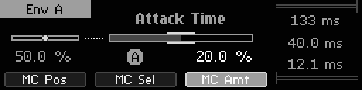Press So Button 3 in order to focus on MC amount and adjust it like a parameter. The modulation range will be indicated separately, next to the slider.
MC amount [Graphical UI]

Click on MC amount icon in order to focus on MC amount and adjust it like a parameter on the slider. The modulation range will be indicated separately, next to the slider and on the main area element.
Modulation range aspects [Panel Unit]

Pressing So Button 4 moves the focus to the rightmost stack of modulation range aspects and cycles it. The selected aspect can be adjusted like a parameter. Provided aspects are the modulation range upper limit, the (current) control position and the modulation range lower limit.
Modulation range aspects [Graphical UI]

Click on MC Lower Limit or MC Upper Limit icon in order to focus on modulation range aspect and change like adjusting a parameter. The control position is in focus when no aspect is selected.
4.4 Macro Controls
The most common practice of using Macro Controls would be the modulation mechanism during user performance, accessible via the Hardware Sources.
4.4.1 Editing a Macro Control
Ribbons in Play Mode [Base Unit]

In Play Mode, Ribbons assigned to Macro Controls will be operable. Use Mode Button to switch modes.
Adjust Macro Control position [Base Unit]
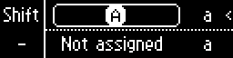In Edit Mode, Ribbon 1 can be used to edit the selected Macro Control. Use Mode Button to switch modes.
Adjust Macro Control position [Panel Unit]

Adjust selected Macro Control position like adjusting a parameter.
Adjust Macro Control position [Graphical UI]
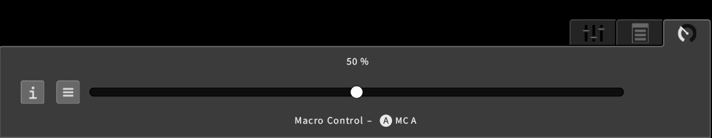In the Parameter Tab, all parameter aspects of the selected Macro Control are provided. Adjust Macro Control position like a parameter.
Fast Mapping [Panel Unit]
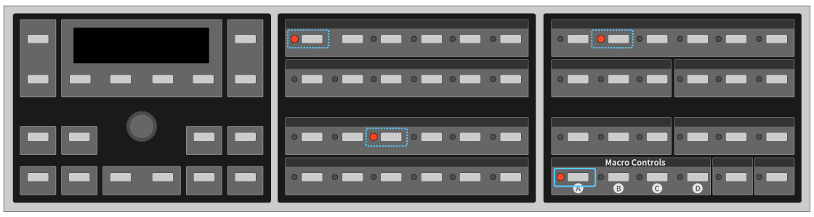When the selection button of a potential target parameter is pressed while the selection button of a Macro Control is held, the assignment can easily be switched on or off. This only works for target parameters on top of the stack.
4.4.2 Macro Control Properties
Focus on Macro Control properties [Panel Unit]
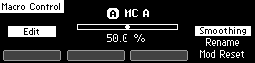Press the Edit Button in order to focus on properties, provided by a stack on the right. The stack can be cycled with Soft Button 4. When pressing the Enter Button, the selected property will be available in focus.
Focus on Macro Control properties [Graphical UI]
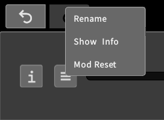In the Parameter Tab, a menu icon can be clicked. In the main area, a right click on a Macro Control element will also invoke a context menu providing access to Macro Control properties.
Rename and edit Macro Control Info[Panel Unit]
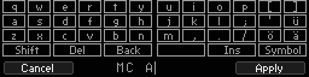The Rename Screen provides a mechanism in order to edit the label or info text of a selected Macro Control. Soft Button 1 cancels the process, Soft Button 4 confirms and applies the process. (See chapter 07.9 for further details)
Rename and edit Macro Control Info[Graphical UI]

A rename dialog appears and the label can be edited with mouse and keyboard.
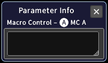The info window appears and the info text can be edited with mouse and keyboard.
„Mod Reset“ (clear target assignments)
Assignments to target parameters of a selected Macro Control will be reset.
Adjust Macro Control smoothing time
Not yet implemented.
4.4.3 Assigning a Macro Control to Hardware Sources
Focus on assignment aspects [Panel Unit]

By default, the Macro Control position is in focus. Soft Buttons 1 to 4 provide focus navigation, pressing a button twice will return to the default focus. One Hardware Source can be selected, and its effect on the Macro Control can be edited. When Ribbon 1 is in Edit mode, the selected aspect can be edited there as well (but selection is only available on the Panel Unit).
HW source position [Panel Unit]

Press Soft Button 1 in order to focus on the currently selected Hardware Source and adjust its position like a parameter.
HW Source selector [Panel Unit]
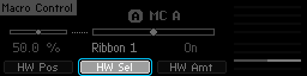Press Soft Button 2 in order to focus on the Hardware Source selector. One of the eight Hardware Sources can be selected by adjusting the selector like a parameter.
HW Source amount [Panel Unit]
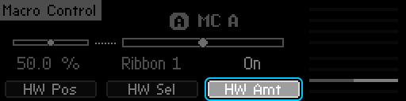Press Soft Button 3 in order to focus on the amount of the currently selected Hardware Source on the selected Macro Control. Adjust the amount like a parameter.
HW Source selection stack [Panel Unit]

Pressing Soft Button 4 moves the focus to the rightmost stack of Hardware Sources and cycles it. The eight sliders indicate the amounts of each Hardware Source on the selected Macro Control. The selected element of the stack represents the corresponding amount an can be adjusted like a parameter.
Access to assignment aspects [Graphical UI]
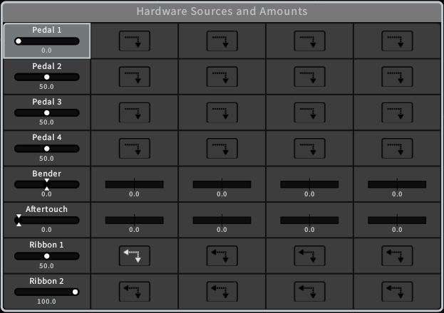The top-center parameter group „Hardware Sources and Amounts“ provides access to all Hardware Sources and their amounts on Macro Controls, represented as a modulation matrix. Items of intereset can be selected and adjusted like a parameter.
4.5 Hardware Sources
The most common practice of using Hardware Sources would be the modulation mechanism during user performance, passing movements via Macro Controls to target parameters.
However, Hardware Sources are available and usable like ordinary parameters. Keep in mind that adjusting Hardware Sources will cause a modulation, potentially affecting Macro Controls and target parameters.
4.5.1 Editing a Hardware Source
HW Source selector [Panel Unit]
All four internal Hardware Sources and any connected external pedal are operable.
Adjust Hardware Source position [Base Unit]
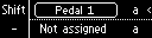In Edit Mode, Ribbon 1 can be used to edit the selected Hardware Source. Use Mode Button to switch modes.
Adjust Hardware Source position [Panel Unit]

Adjust the selected Hardware Source position like adjusting a parameter.
Adjust Hardware Source position [Graphical UI]
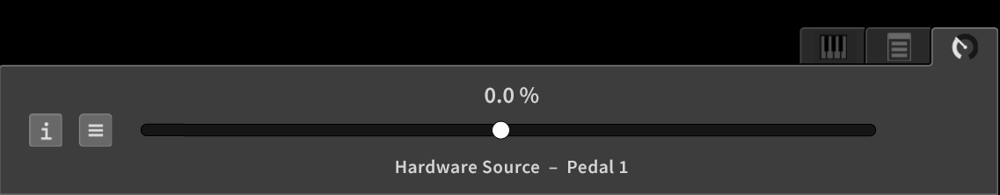In the Parameter Tab, all parameter aspects of the selected Hardware Source are provided. Adjust the position like a parameter.
4.5.2 Hardware Source Properties
Focus on Hardware Source properties [Panel Unit]

For pedals and ribbons, the return behavior can be edited. Pressing the Edit Button when a Hardware Source is selected will redirect to the edit screen. Use Soft Buttons to select one of the provided aspects.
Focus on Hardware Source properties [Graphical UI]
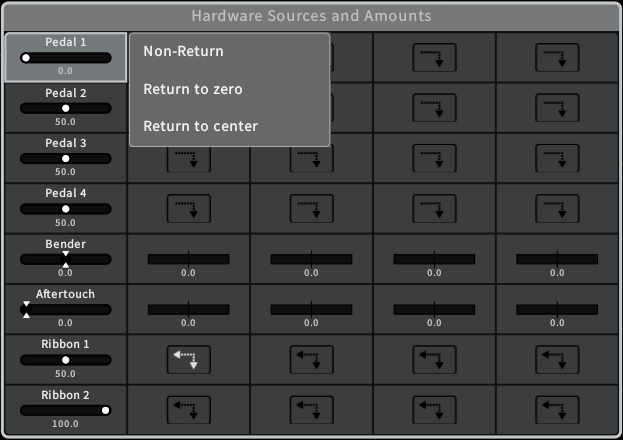In the main area, a right click on a Hardware Source element will invoke a context menu providing access to the properties.
Edit Return Behaviour [Panel Unit]

Edit the return behavior like adjusting a parameter. Returning behavior allows Hardware Source amounts to Macro Controls to be continuous.
Edit Return Behaviour [Graphical UI]
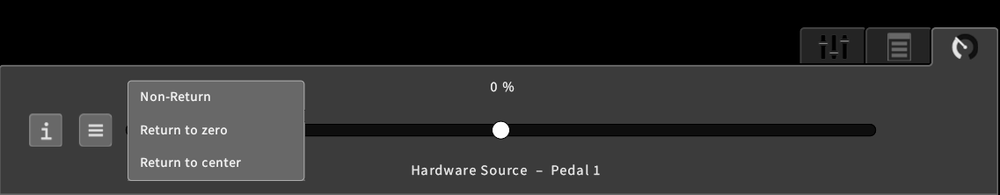The context menu provides available return behaviors to select. Returning behavior allows Hardware Source amounts to Macro Controls to be continuous.
4.5.3 Mapping a Hardware Source to Macro Controls
Focus on assignment aspects [Panel Unit]
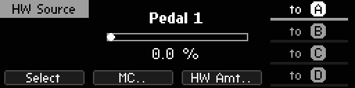By default, the Hardware Source position is in focus. Soft Buttons 1 to 4 provide focus navigation, pressing a button twice will return to the default focus. One Hardware Source can be selected, and its effect on one Macro Control can be edited.
Focus on assignment aspects [Graphical UI]

The top-center parameter group „Hardware Sources and Amounts“ provides access to all Hardware Sources and their amounts on Macro Controls, represented as a modulation matrix. Items of interest can be selected and adjusted like a parameter.
Macro Control selector [Panel Unit]
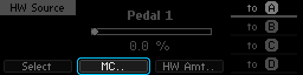Pressing Soft Button 3 will redirect to the currently associated Macro Control.
HW Source amount [Panel Unit]
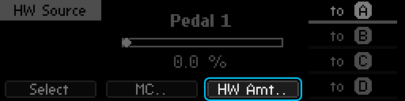Pressing Soft Button 2 will redirect to the Hardware Amount screen, showing the amount of the currently selected Hardware Source on the currently associated Macro Control.
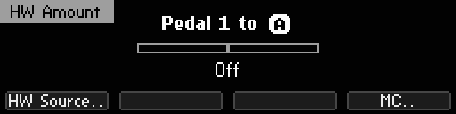The amount can be edited like adjusting a parameter. Pressing Soft Button 1 will redirect to the Hardware Source, Soft Button 4 will redirect to the Macro Control.
MC target selection stack [Panel Unit]

Pressing Soft Button 4 will cycle through the rightmost stack of Macro Controls in order to change the current association.
4.6 Presets
4.6.1 Loading a Preset
Preset Navigation [Base Unit]
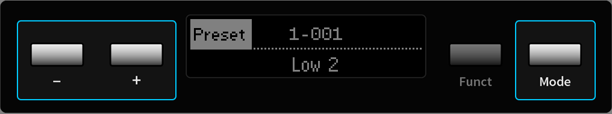The Base Unit Control Panel can be set in Preset mode by the Mode Button. Using + and – buttons will navigate through the current bank. Both ribbons will remain in Play mode.
Preset Navigation [Panel Unit]
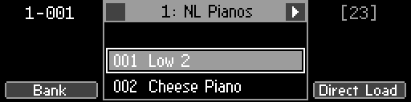Press the Preset button in order to focus on the Preset screen. The Encoder as well as the Inc and Dec Buttons will navigate through the current Bank. Soft Buttons 2 and 3 navigate banks. The selection is indicated by a rectangle.
Preset Navigation [Graphical UI]
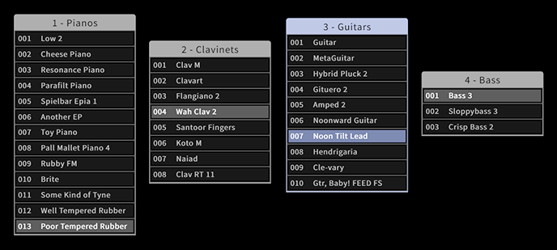In the main area, every bank is available and can be dragged on any position. If expanded, presets can be selected by clicking.
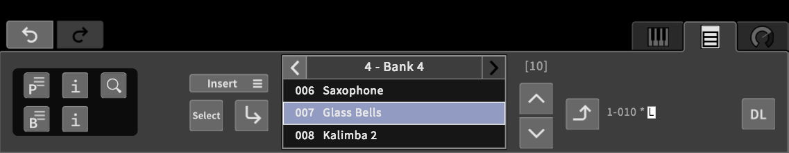In the Preset tab, the currently selected bank can be navigated by clicking onto the corresponding navigation icons. The arrow keys can be used to navigate presets (up, down) and banks (left, right).
Loading a Preset [Base Unit]
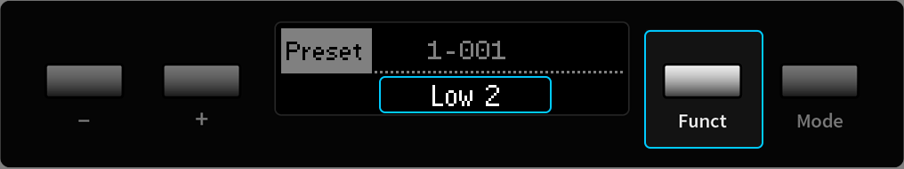On the Base Unit press the Funct Button in order to load the selected preset.
Loading a Preset [Panel Unit]
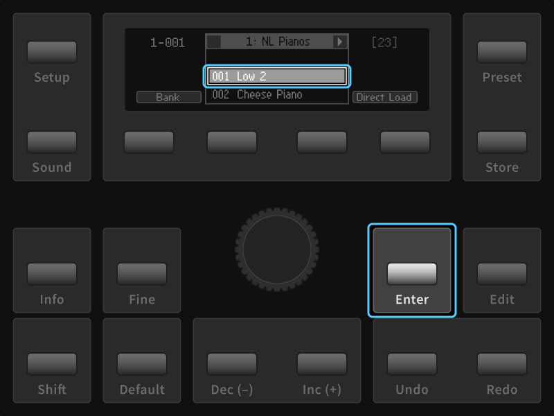On the Panel Unit press the Enter Button in order to load the selected preset.
Loading a Preset [Graphical UI]
On the Graphical UI the Preset tab provides a Load icon in order to load the currently selected preset. Or click on a bank element twice.
DirectLoad [Base Unit]
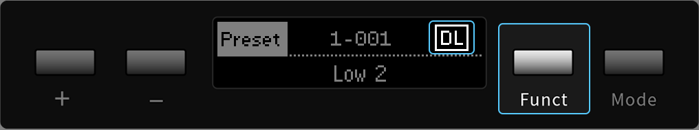On the Base Unit hold the Funct Button for a second to toggle the Direct Load option.
DirectLoad [Panel Unit]

On the Panel Unit press the Soft Button 4 in order to toggle the Direct Load option.
Direct Load [Graphical UI]
On the Graphical UI press the Direct Load icon in the Preset tab in order to toggle the Direct Load option.
Bank Navigation [Base Unit]
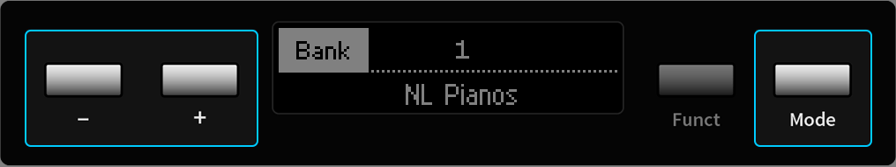On the Base Unit Switch to Bank mode by the Mode Button.
Using the + and – buttons will navigate banks.
Bank Navigation [Panel Unit]

On the Panel Unit press Soft Button 1 in order to focus on banks and navigate them instead. Soft Buttons 2 and 3 will navigate presets now.
Bank Navigation [Graphical UI]

In the main area of the graphical UI the bank selection updates when loading a preset. In the Preset tab, banks can be navigated by the corresponding navigation icons. (The arrow keys can be used as well, as described.)
4.6.2 Storing a Preset
Store Screen Navigation [Panel Unit]

Press the Store button in order to focus on the Store screen. The store position can be adjusted by preset and bank navigation (as described in chapter 7.6.1).
Store Screen Navigation [Graphical UI]
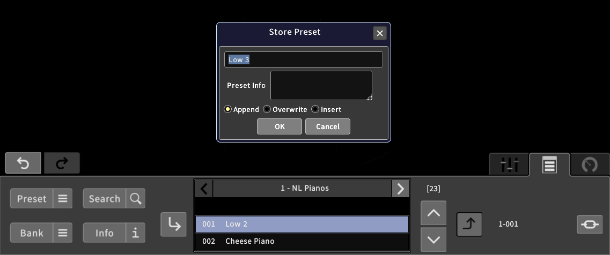Clicking on the Store icon in the Preset tab invokes the Store dialog. The preset name, number and comment text can be edited. OK and Cancel buttons are provided in order to finish the process. The Store icon can also be dragged on the desired bank in order to store the preset there.
Store Method [Panel Unit]
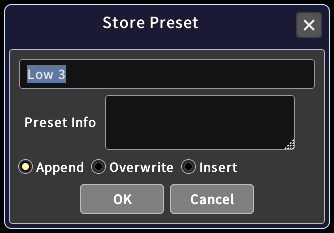The Store method can be selected in the Store dialog.
Preset Naming [Panel Unit]

If the preset is considered „new“, the Rename screen will appear, requesting a name for the preset.
Store Methods
The store position will be finally influenced by the chosen store method, which can be one of the following three:
| Append | The preset will be stored at the end of the currently selected bank. |
| Overwrite | The preset will be stored at the current position in the currently selected bank, overwriting the existing preset. |
| Insert | The preset will be stored behind the current position in the currently selected bank. |
4.6.3 Editing Presets and Banks
Preset Edit Mode [Panel Unit]

When the Preset screen is in focus, pressing the Edit button invokes a menu, represented in the rightmost stack. Cycle the stack by pressing Soft Button 4 in order to select a menu entry and press the Enter button in order to focus on an aspect. Press the Edit button again to return to the Preset screen.
Preset Edit Mode [Graphical UI]
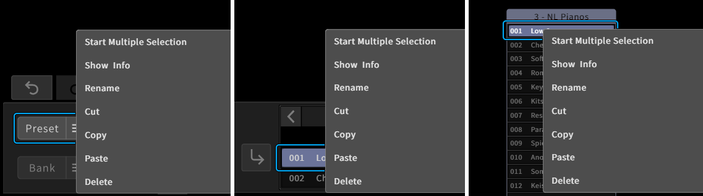In the Preset tab, a Preset menu button is provided. Clicking on this button or right-clicking (tapping and holding) on a preset element in a bank invokes the context menu, providing access to all aspects.
Preset Rename [Graphical UI]
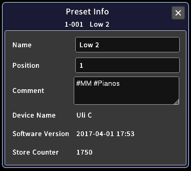 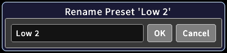The preset info window will appear, showing all related information on the preset. Name, position and comment text of the preset can be edited. A Rename dialog will appear, so the preset name can be changed.
Preset Edit Menu [Panel Unit] and [Graphical UI]
| Cut | The selected preset will be moved into the temporary buffer (being deleted at the current position). |
| Copy | The selected preset will be copied into a temporary buffer, ready to be pasted at any time. |
| Paste | The selected preset will be copied into a temporary buffer, ready to be pasted at any time. |
| Delete | The selected preset will be deleted from the bank. |
Bank Edit Mode [Panel Unit]
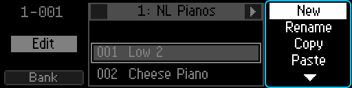When the Bank screen is in focus, pressing the Edit button invokes a menu, represented in the rightmost stack. Cycle the stack by pressing Soft Button 4 in order to select a menu entry and press the Enter button in order to focus on an aspect. Press the Edit button again to return to the Preset screen.
Bank Edit Mode [Graphical UI]
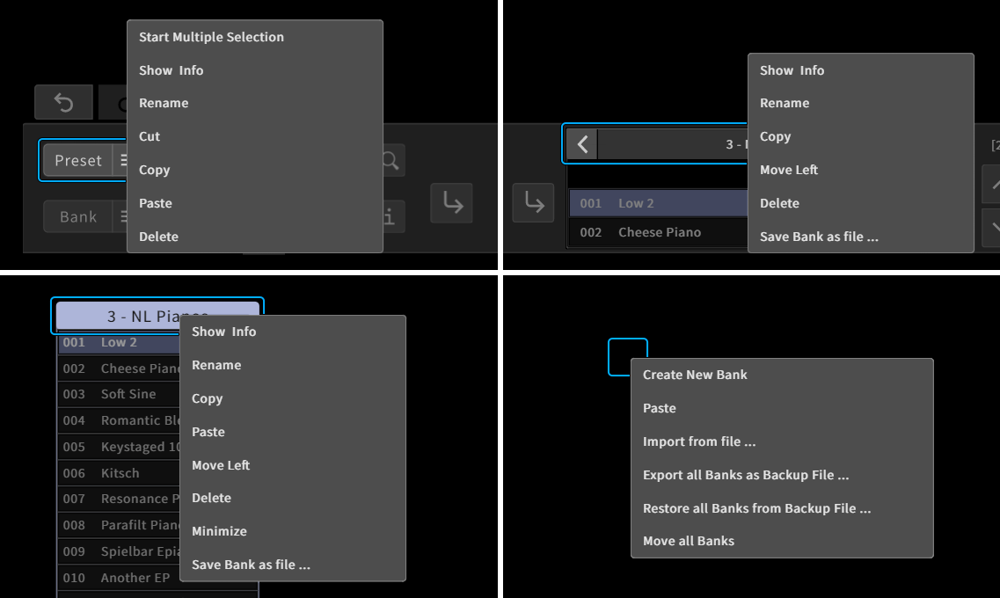The Gaphical User Interface provides two menus for editing banks. There is a global menu (invoked by a right-click / tap-and-hold gesture on the background) and a local menu for the current bank (provided by a bank menu icon in the Preset tab or by a right-click / tap-and-hold gesture on the bank header).
New bank [Panel Unit]
A new, empty bank will be created and appended to the bank list after choosing a name in the Rename screen.
New bank [Graphical UI]
A dialog appears, requesting a name for the new bank. After confirming, a new empty bank will be appended to the bank list.
Rename bank [Panel Unit]
The Rename screen will appear, so the current bank name can be changed. See chapter 7.9 for further details.
Rename bank [Graphical UI]
The Rename screen will appear, so the current bank name can be changed. See chapter 7.9 for further details.
Bank Edit Menu [Panel Unit] and [Graphical UI]
| Copy | The selected bank will be copied into a temporary buffer, ready to be pasted. |
| Paste | The copied bank will be appended as a new bank. |
| Delete | The selected bank will be deleted. |
| Move left/right | The bank number (position in the bank list) can be altered by moving it left (decreasing it) or right (increasing it). |
Import and Export (on USB stick) [Panel Unit]
When a USB stick is connected, the selected bank can be exported to it by using the Export option. Any bank present on the USB stick can be selected and imported by using the Import option.
Import and Export (on USB stick) [Graphical UI]
The local menu provides the option to save the current bank as a file, which will be downloaded on the external device. The global menu includes an option to import a particular bank from a file present on the external device, which can be selected and uploaded.
See chapter 7.14 for further details.
4.7 Item Info
Parameter Info [Panel Unit]

When a parameter is selected, the Info button invokes the Info screen, showing the current parameter’s description.
Parameter Info [Graphical UI]
In the Parameter tab, an Info icon is provided, toggling an Info window showing the description of the currently selected parameter. The window will update when selecting another parameter.
Macro Control Info [Panel Unit]

When a Macro Control is selected, the Info button invokes the Info screen, showing the description of the currently selected Macro Control. When pressing the Edit button, the user-definable info text can be edited in the Rename screen.
Macro Control Info [Graphical UI]
The Info icon in the Parameter tab works accordingly when selecting a Macro Control, context menus for the main area elements are also provided. The provided Info window allows for edits on the user-definable info text.
Hardware Source/Amount Info [Panel Unit]
When the focus is on a Hardware Source or to a Hardware Amount on a Macro Control, the Info button provides the Info screen according to the item in focus.
Hardware Source/Amount Info [Graphical UI]
The Info window will display the description of a selected Hardware Source or Amount as described for ordinary parameters.
Preset Info [Panel Unit]

When in the Preset screen, the Info button invokes the Info screen for the currently selected preset. The screen can be scrolled by the Encoder or Inc, Dec buttons. When pressing the Edit button, the comment text can be edited in the Rename screen.
Preset Info [Graphical UI]

The preset info window can be made visible when clicking on the Info icon in the Preset tab or by a right click on a preset within a bank, selecting the „show info“ option. The window can be left visible and will update when loading other presets.
Bank Info [Panel Unit]
When in the Bank screen, the Info button invokes the Info screen for the currently selected bank. The screen can be scrolled by the Encoder or Inc, Dec buttons. When pressing the Edit button, the comment text can be edited in the Rename screen.
Bank Info [Graphical UI]
The bank info window can be made visible when selecting „show info“ in the context menu provided by the bank menu icon. The window can be left visible and will update when selecting other banks.
4.8 Overviews
There are different Overviews provided on the Panel Unit, enabling the user to quickly get an impression of the inner workings of a particular sound, just by a brief glance at the parameter panels. Whithout listening to the sound or studying parameter values, certain assumptions on signal flow and modulation assignments can be easily made.
Active Overview [Panel Unit]
At any time, when the Preset screen is in focus, active overview will be provided. Signal-flow related parameters that are not zero ('active') will have lit LEDs (see chapter 8.4 for further details). When Macro Controls are mapped to at least one parameter, they will show lit LEDs as well.
MC Target Overview [Panel Unit]
When a Macro Control is selected. all assigned target parameters will show their assignment by blinking LEDs.
MC Target Overview [Graphical UI]
When a Macro Control is selected, it will be surrounded by a red rectangle. All assigned target parameters show their assignment by surrounding red rectangles as well.
Flow Overview [Panel UI]

When selecting a parameter of a particular group, blinking LEDs on the Panel Unit show where the output signal of this group is applied further in the signal chain. (If, for example, a parameter of the Feedback Mixer is selected, the PM FB and FB Mix parameters of the Oscillators and Shapers will have blinking LEDs, if they are unequal to zero.)
4.9 The Undo Mechanism
Simple undo/redo [Panel Unit]
The current, active branch can be navigated by using the Undo and Redo buttons in the Edit Panel, recalling the corresponding state immediately.
Simple undo/redo [Graphical UI]

The current, active branch can be navigated by using the Undo and Redo icons above the tab area, recalling the corresponding state immediately.
Focus on undo history [Panel Unit]
Pressing both Undo and Redo buttons at once will invoke the Undo screen, providing full navigation of the undo tree.
Focus on undo history [Graphical UI]
The undo history window can be scrolled by drag gestures on the background or the scrollbar, or by using the mouse wheel. A simple click on an element will recall the corresponding state. As all branches of the tree are visible in this window, the branch navigation is fully integrated.
A right-click (or tap and hold) on an element provides a context menu for further options. The „hide“ option will hide the selected branch, the other options follow below.
Navigate current branch [Panel Unit]
The Undo screen can only show one branch of the undo tree. It can be scrolled by using the Encoder or Inc, Dec buttons. The current position will be indicated by a rectangle and can be recalled by pressing the Enter button.
Navigate branches [Panel Unit]
If a branch splits at the current position, pointy brackets are visible on the entry. Use the Soft Buttons 1 and 3 to switch between branches. Recalling an entry of an inactive branch will make it active.
Navigate current branch/branches [Graphical UI]
The undo history window can be scrolled by drag gestures on the background or the scrollbar, or by using the mouse wheel. A simple click on an element will recall the corresponding state. As all branches of the tree are visible in this window, the branch navigation is fully integrated.
A right-click (or tap and hold) on an element provides a context menu for further options. The „hide“ option will hide the selected branch, the other options follow below.
Delete (inactive) branch [Panel Unit]
When the selected element is on an inactive branch, the „delete from here“ option will be provided. Confirming this option will delete the whole branch. Pressing Soft Button 4 will delete the whole branch.
Delete (inactive) branch [Graphical UI]
When the selected element is on an inactive branch, the „delete from here“ option will be provided. Confirming this option will delete the whole branch.
Make element the new root [Panel Unit]

When navigating the current, active branch, press the Edit button in order to get the „make root“ option. All entries and branches prior to the current position will be deleted by pressing Soft Button 4.
Make element the new root [Graphical UI]
When the selected element is on the current, active branch, the „make this the new root“ option will be provided. Confirming this option will delete all elements and branches prior to the selected element.
4.10 The Rename Mechanism
Affected Items
Items that can be renamed are the labels and info texts of Macro Controls, names and comment texts of presets and banks.
Get rename option [Panel Unit]


As previously described, renaming options will be provided when pressing the Edit button in the corresponding context.
Get rename option [Graphical UI]
As previously described, renaming options will be provided when invoking a context menu for corresponding items.
The rename screen [Panel Unit]
When the rename screen is shown, the two Parameter Selection Panels on the left or on the right side of the display can be used as a keyboard, as indicated by the keyboard layout in the screen.
The cursor can be moved by using the Encoder, or the Inc, Dec buttons. Soft Button 1 will cancel the process, Soft Button 4 will apply the process.
The rename screen [Graphical UI]
When a rename option was called, a dialog or a window will appear, containing an entry or textbox element. Mouse and keyboard on the external device can be used to rename the corresponding item. Dialogs provide OK and Cancel buttons in order to finish the process accordingly.
4.11 Sound Manipulation
The current setting can be further manipulated, affecting all parameters at once.
Focus on Sound screen [Panel Unit]


Pressing the Sound button will invoke the Sound screen, providing options to further manipulate the current sound or sound transition.
Focus on Sound screen [Graphical UI]
The Sound tab provides options to further manipulate the current sound or sound transition.
Init Sound [Panel Unit]

Press Soft Button 1 to select and then the Enter button to recall the init sound. Every parameter will load its default value.
Init Sound [Graphical UI]
When clicking on the „Init Sound“ icon, every parameter will load its default value.
Reset Init [Panel Unit]

Press the Edit button to invoke a menu stack on the right, navigate with Soft Button 4 and press Enter in order to reset the init sound. The factory default settings will be applied to all parameters.
Reset Init [Graphical UI]

When clicking on the „Reset Init“ icon, the default value of every parameter will be reset to the factory settings.
Store Init [Panel Unit]

The menu stack also provides an option in order to store the current sound as the new default settings for all parameters.
Store Init [Graphical UI]
When clicking on the „Store Init“ icon, the default value of every parameter will be overwritten by the corresponding current value.
Randomize [Panel Unit]
Press Soft Button 2 in order to focus on the sound randomization. The amount of the randomization can be adjusted like editing a parameter. Press the Enter button in order to randomize all parameters.
Randomize [Graphical UI]
When clicking on the „Randomize Sound“ icon, all parameters will be randomized according to the randomization amount, shown below. Use drag gestures on the amount value in order to change the amount like adjusting a parameter.
Transition Time [Panel Unit]

Press Soft Button 3 in order to focus on the transition time and adjust it like editing a parameter. The transition time will be effective when recalling presets, defining the smoothing time of the parameters, approaching their new values.
Transition Time [Graphical UI]
Change the transition time by using drag gestures on the „Transition Time“ value, like adjusting a parameter. The transition time will be effective when recalling presets, defining the smoothing time of the parameters, approaching their new values.
4.12 Setup
This section explains the navigation to and within the setup menu. Refer to chapter 9 for a detailed reference.
Focus on setup menu [Panel Unit]
Press the Setup button in order to invoke the Setup screen. The menu content is organized in different levels which can be entered.
Scrolling [Panel Unit]
Scroll the menu by using the Encoder or the Inc, Dec buttons. The position will be indicated by a highlighted background.
Enter a submenu/property [Panel Unit]
Press the Enter button or Soft Buttons 1 or 2 in order to enter a submenu or a menu property, according to the current position.
Adjust a property [Panel Unit]

When focussing on a property, adjustments can be done like editing a parameter, by using the Encoder or the Inc, Dec buttons.
Escape a submenu/property [Panel Unit]

Soft Buttons 3 and 4 can be used to navigate back to the next higher level. When a property is in focus, the Enter button has the same effect.
Escape a submenu/property [Graphical UI]

The topright main menu provides the „Show/Hide Setup“ option, toggling the visibility of the Setup window. The menu content is organized in tabs which can be focussed. In each tab, the corresponding properties are provided and can be adjusted (some properties have context menus, some can be adjusted by drag gestures, like a parameter).
4.13 Backups
As previously mentioned, single banks can be imported and exported from and to either a connected USB stick or the connected external device. In addition, the transfer of all banks at once is also provided, which allows for fast and easy backups.
Exporting and Restoring Backups (on USB stick) [Panel Unit]
In the Setup menu, the Backup submenu can be found, providing a Restore and an Export option. When a USB stick is connected, pressing the Enter button will allow for exporting or restoring of backups.
Exporting and Restoring Backups (on external device) [Graphical UI]
The global menu provides options for exporting and restoring backups. When „Export all Banks as Backup File“ is selected, all banks will be copied into a single file which then will be downloaded on the external device. When „Import all Banks from Backup File“ is selected, a backup file present on the external device can be chosen and uploaded.
Please keep in mind that when restoring from a backup file, all banks currently present on the C15 will be lost. We recommend to export a backup before restoring in order to maintain all present data.
4.14 Base Unit functionality
Here is a quick recap of the Base Unit functionality, compiling all available features into a single overview.

The Mode button cycles four distinct operation modes, which are explained in the following. The functionality of the remaining buttons depends on the current mode.
In Play mode, both Ribbons function as ordinary Hardware Sources. If they are assigned to a Macro Control, they will be operable. The +/- buttons can be used for transposing the whole instrument (note shift). Pressing a single button will perform an octave shift, pressing one button while holding the other will perform a semitone shift. The Funct button switches between absolute and relative behavior for the most recently used Ribbon (indicated by a pointy bracket).
In Edit Mode, Ribbon 1 will operate as an additional parameter editor for the current parameter focus. The remaining functionality remains as described for the Play mode.
In Bank Mode, both Ribbons remain operable as Hardware Sources. The +/- but- tons can be used to navigate banks. The Funct button will serve as a direct load switch (when held for a second). The last selected preset of the corresponding bank will be loaded.
In Preset Mode, both Ribbons remain operable as Hardware Sources. The +/- but- tons can be used to navigate presets. The Funct button will serve as a Load button (when pressed) or as a direct load switch (when held for a second).
4.15 Graphical UI exclusive functionality
There are some more features of the Graphical User Interface, which are not available on both Base and Panel unit.
Preset Search
All available presets can be searched for keywords, the search results will be highlighted until the search is cancelled. Preset names and comment texts will be evaluated when searching. This means, that the success of a search strongly depends on the level of documentation. The most sophisticated way of tagging and searching for presets would be using hashtags for important keywords.
Preset Drag and Drop
A selected preset can be dragged on other positions in a bank, into other banks or on the background. When it is dropped, it will move to the new position (if the bank remains the same), or it will be copied to the new position (creating a new bank if it was dropped on the background).
If a preset is dropped directly on another preset (as indicated by a red background), the other preset will be replaced. In a similar manner, banks can be dragged as well in order to change their position in the main area, or to copy their contents into other banks.
Multiple Preset Selection
Bank context menus (invoked by a right-click or tapping and holding on a bank in the main area) provide an option to start and finish the selection of multiple presets. During multiple selection, presets of any bank can be added or removed from the selection (but they will not be loaded).
All selected presets can then be deleted (see context menu) or dragged into any bank at any position or on the background, creating a new bank containing copies of the selected presets. The selection of multiple presets can be finished in the context menu or by a click on the background.
Note that Preset Drag and Drop and Multiple Preset Selection are only available, if the GUI Settings (explained in the following) allow for context menus and drag and drop.
Move all Banks
There is a shortcut to move all banks at the same time, provided by the global context menu (provided by a right-click or tapping and holding on the background). If the „Move all Banks“ option is selected, a white rectangle will appear, surrounding all banks. Drag gestures now allow for moving all banks to another place in the main area. To stop, re-select the option or click on the background.
Minimize Banks
The local bank context menu provides an option to minimize a bank. When a bank is minimized, it will consume only a small space, but still provides access to all contained presets (the access is only sequential, though).
Docking Banks
When dragging banks manually to certain positions in the main area, they might not align very well. In order to create an alignment, a bank can be docked to another by placing it close to the right or bottom. Docked banks also behave as a group, when selecting the left- or topmost bank, as drag gestures will then move all docked banks at once. Undocking banks can be achieved by selecting a certain bank that is not left- or topmost and dragging it to a remote position.
Preset and Bank Visibility
The main menu provides an option to show or hide all available banks. This option provides a possibility to „clean up“ the main area, only focussing on parameters. Of course, all banks are still available in the Preset tab and the Hardware Interface.
Parameter Visibility
Similarly, the parameters in the main area can be shown or hidden, as provided by the main menu. When all parameters are hidden, the focus can be put on just the presets and banks. Of course, all parameters can still be edited in the Parameter tab (although they cannot be selected anymore) or on the Hardware User Interface (still providing complete access).
GUI Settings

There are some options concerning only the Graphical User Interface. They are provided in the Setup menu, which can be called via the top right Main menu icon. These settings are not available on the Hardware Interface.
Selection Auto Scroll
Determine if selected items should be automatically scrolled to. Available options are none, parameters, presets and both (presets and parameters).
Edit Parameter
Determine if parameters can be directly adjusted in the main area. Available options are always, if (the parameter is) selected and never. In the Parameter tab, edits are always possible.
Context Menus
Determine if context menus are available in the main area. They can be invoked by a right click or tapping and holding. Available options are on and off.
Preset Drag and Drop
Determine if presets can be moved in the main area by drag and drop gestures. Available options are on and off.
Display Scaling Factor
Should the Graphical User Interface appear too small or big for the device screen resolution, this option can compensate. Available scaling factors are 50%, 75%, 100%, 125% and 150%.
Stripe Brightness
The main area background features a radial arrangement of lines pointing to the center position. They can help keeping track of the current position. Available options are o , 10%, 25% and 50%.
Bitmap Cache
Determine how objects of the Graphical User Interface should be redrawn. Avail- able options are o and on. If the bitmap cache is activated, CPU consumption on the device will decrease, but more RAM will be required. If the cache is deactivated, CPU consumption will rise but RAM usage will decrease. The e ect of this settings strongly depends on the external device.
Show Developer Options
There are some more options (beyond the usual interaction with the C15) that are not relevant for the user, but can be important for developers (when testing a device or running diagnostics of possible malfunctions).Therefore, the Developer Options can remain hidden in usual circumstances. If they are displayed, they can be found way above the parameters in the main area. We recommend to simply ignore these options.
Available Hot Keys
The arrow keys can be used to navigate presets and banks. Presets of a bank can be navigated by using up and down arrow keys, banks can be navigated by using left and right arrow keys.
Parameters can be adjusted by using the K and M keys, working like the Inc and Dec buttons. The M key will decrement, the K key will increment the control position.
The Shift key holds the Fine mode while being pressed.

The three available tabs of the Graphical User Interface can be navigated by using the P (Parameter tab), O (Preset tab) and S (Sound tab) keys. When a certain tab is visible, pressing the corresponding key will hide the tab area.

The H key determines if banks are visible in the main area.

The Return key will load the currently selected preset.

The Escape key will cancel open dialog windows.